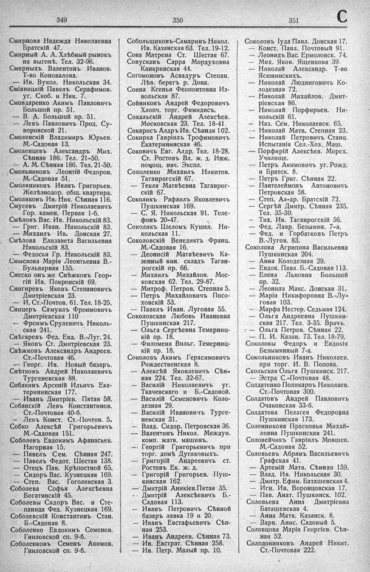

Лист источника 467
Скан

Распознанный текст
349
Смирнова Надежда Николаевна
Братскій 47.
Смирный А. А. Хлѣбный рынокъ
на выгонѣ. Тел. 32-96.
Смирныхъ Валентинъ Иванов.
Т-во Коновалова.
— Ив. Вукол. Никольская 34.
Сміаницкій Павелъ Серафимов.
уг. Скоб. и Ник. 7.
Смовдаренко Акимъ Павловичъ
Большой пр. 51.
— В. А. Большой пр. 51.
— Левъ Павловичъ Прод. Су-
воровской 21.
Смоленскій Владимиръ Юрьев.
М.-Садовая 13.
Смоленцевъ Александръ Мих.
Сѣнная 186. Тел. 21-50.
— А. М. Сѣнная 186. Тел. 21-50.
Смольниковъ Леонтій Федоров.
М.-Садовая 51.
Смоляниковъ Иванъ Григорьев.
Желѣзнодор. общ. квартира.
Смоляковъ Ив. Ник. Сѣнная 116.
Смусевъ Дмитрій Николаевичъ
Гор. камен. Первая 1-б.
Смѣловъ Вас. Ив. Никольскій 83.
— Григ. Иван. Никольскій 83.
— Михаилъ Ив. Донская 27.
Смѣлова Елизавета Васильевна
Никольскій 83.
— Федосья Гр. Никольскій 83.
Смыслова Марія Леонтьевна В.-
Бульварная 155.
Снеско онъ же Снѣжковъ Геор-
гій Ив. Покровскій 69.
Снигиревъ Яковъ Степановичъ
Дмитріевская 23.
— И. Ст.-Почтов. 61. Тел. 18-25.
Сницеръ Самуилъ Фроимовичъ
Дмитріевская 110
— Фроимъ Срулевичъ Николь-
ская 241.
Снѣгаревъ Фед. Евд. В.-Луг. 24.
— Яковъ Ст. Дмитріевская 23.
Снѣжковъ Александръ Андреев.
Ст.-Почтовая 46.
— Георг. Ив. Новый базаръ.
Снѣтковъ Андрей Николаевичъ
Тургеневская 88.
Собакинъ Арсеній Ильичъ Ека-
терининская 177.
— Иванъ Дмитріев. Пятая 58.
Собанскій Левъ Константинов.
Ст.-Почтовая 40-б.
— Левъ Конст. Ст.-Почтов. 5.
Собко Алексѣй Григорьевичъ
М.-Садовая 151.
Соболевъ Евдокимъ Афанасьев.
Нагорная 15.
— Павелъ Сем. Сѣнная 247.
— Павелъ Федот. Шестая 138.
— Отецъ Пав. Крѣпостной 65.
— Сидоръ Вас. Кузнецкая 169.
— Степ. Вас. Гоголевская 3.
Соболева Софья Алексѣевна
Богатянскій 45.
Соболевы Сидоръ Вас. и Сте-
панида Фед. Кузнецкая 169.
Соболевскій Константинъ Стан.
Б.-Садовая 8.
Соболенко Евдокимъ Семенов.
Гниловской сп. 9-б.
Соболенковъ Семенъ Акимов.
Гниловской сп. 9-б.
350
Собольщиковъ-Самаринъ Никол.
Ив. Казанская 63. Тел. 19-12.
Сова Матрена Ст. Шестая 67.
Совусканъ Сарра Мордуховна
Канкринская 44.
Согомоновъ Асвадуръ Степан.
Лѣв. берегъ р. Дона.
Соина Ксенья Феопонтовна Из-
вольская 87.
Сойниковъ Андрей Федоровичъ
Хлопч. торг. Фимидисъ.
Сокальскій Андрей Алексѣев.
Московская 23. Тел. 18-41.
Сокарисъ Алдръ Ив. Сѣнная 102.
Сокирка Гавріилъ Трофимовичъ
Екатерининская 46.
Соковичъ Евг. Алдр. Тел. 18-28.
Ст. Ростовъ Вл. ж. д. Инж.
помощ. нач. Экспл.
Соколенко Михаилъ Никитов.
Таганрогскій 67.
— Текля Матвѣевна Таганрог-
скій 67.
Соколикъ Рафаилъ Яковлевичъ
Пушкинская 169.
— С. Я. Никольская 91. Теле-
фонъ 20-47.
Соколикъ Шеломъ Кушел. Ни-
кольская 11.
Соколовскій Венедиктъ Франц.
М.-Садовая 16.
— Деонисій Матвѣевичъ Ка-
зенный вин. складъ Таган-
рогскій пр. 66.
— Михаилъ Михайлов. Мос-
ковская 62. Тел. 29-87.
— Митроф. Петров. Степная 5.
— Петръ Михайловичъ Посо-
ховскій 53.
— Павелъ Иван. Луговая 55.
Соколовская Любовь Ивановна
Пушкинская 217.
— Ольга Сергѣевна Темерниц-
кій пр. 18.
— Филомена Вильг. Темерниц-
кій пр. 18.
Соколовъ Акимъ Герасимовичъ
Рождественская 8.
— Алексѣй Яковлевичъ Сѣн-
ная 224. Тел. 32-67.
— Василій Николаевичъ уг.
Ткачевскаго и Б.-Садовой.
— Василій Семеновичъ Коло-
дезная 29.
— Василій Ивановичъ Турге-
невская 31.
— Влад. Сидор. Петровская 36.
— Валентинъ Никол. Междун.
комп. жатв. машинъ.
— Георгій Григорьевичъ при
торг. домѣ Дутиковыхъ.
— Григорій Андреевичъ ст.
Ростовъ Ек. ж. д.
— Григорій Григорьев. Пуш-
кинская 162.
— Дмитрій Аникіев. Пятая 35.
— Дмитрій Алексѣевичъ Б.-
Садовая 113.
— Иванъ Петровичъ Сѣнной
базаръ лавка 19 и 20.
— Иванъ Евстафьевичъ Сѣн-
ная 253.
— Иванъ Андреев. Сѣнная 73.
— Ив. Евстрат. Сѣнная 258.
— Ив. Петр. Малый пр. 10.
351 C
Соколовъ Іуда Павл. Донская 17.
— Конст. Павл. Почтовый 91.
— Леонидъ Вас. Ермоловск. 74.
— Мих. Яков. Ященкова 39.
— Николай Александр. Т-во
Ясюнинскихъ.
— Николай Людвиговичъ Ко-
лодезная 72.
— Николай Михайлов. Дмит-
ріевская 86.
— Николай Порфирьев. Ни-
кольскій 61.
— Наз. Сем. Николаевск. 65.
— Николай Матв. Степная 23.
— Николай Петровичъ Станц.
Испытанія Сел.-Хоз. Маш.
— Порфирій Алексѣев. Морех.
Училище.
— Петръ Акимовичъ уг. Рожд.
и Братск. 8.
— Петръ Григ. Сѣнная 22.
— Пантелеймонъ Антоновичъ
Петровская 58.
— Степ. Ал-др. Братскій 72.
— Сергѣй Дмитр. Сѣнная 235.
Тел. 35-30.
— Тих. Ив. Таганрогскій 56.
— Фед. Лавр. Безымян. 7-а.
— Фед. и Горбатковъ Петръ
В.-Лугов. 83.
Соколова Агрипина Васильевна
Пушкинская 204.
— Анна Колодезная 29.
— Евдок. Павл. Б.-Садовая 113.
— Елена Львовна Большой
пр. 32.
— Леонила Макс. Донская 31.
— Марія Никифоровна В.-Лу-
говая 103.
— Марфа Нестер. Седьмая 124.
— Ольга Андреевна Пушкин-
ская 217. Тел. 3-35. Врачъ.
— Ольга Петров. Сѣнная 22.
— П. И. Казан. 73. Тел. 18-79.
Соколовы Федоръ и Евдокія
Безымянный 7-а.
Сокольниковъ Иванъ Николаев.
при торг. И. В. Попова.
Скольская Ольга Пушкинск. 217.
— Эстра С.-Почтовая 48.
Солдатенко Поликарпъ Николаев.
Ст.-Почтовая 300.
Солдатовъ Андрей Павловичъ
Очаковская 33-б.
Солдатова Пелагея Федоровна
Пушкинская 173.
Соленникова Прасковья Михай-
ловна Пушкинская 241.
Соловейчикъ Гавріилъ Мовшев.
М.-Садовая 52.
Соловьевъ Абрамъ Васильевичъ
Графская 41.
— Артемій Матв. Сѣнная 159.
— Влад. Ив. Никольская 30.
— Дмитр. Ефим. Баташевская 4.
— Игн. Ив. Воронцовская 17.
— Пав. Анат. Пушкинск. 102.
Соловьева Анна Дмитріевна
Баташевская 4.
— Анна Матв. Казанск. 8.
— Варв. Анис. Садовый 5.
Соловцова Марія Георгіев. Сѣн-
ная 52.
Солодовниковъ Андрей Никит.
Ст.-Почтовая 222.